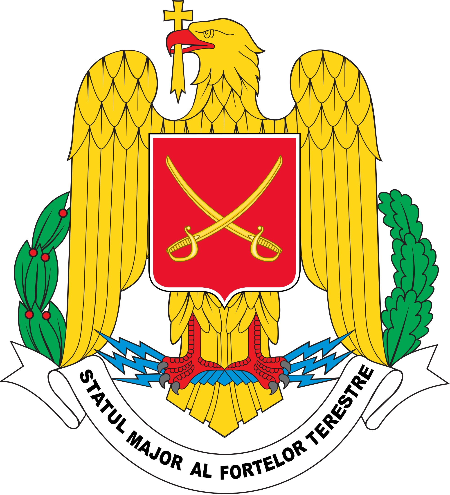
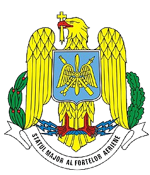

|  |
Forțele Terestre Române este numele unei părți din cadrul Armatei Române. Având tot echipamentul revizuit recent, azi aceste forțe sunt bine echipate, România fiind astfel unul dintre cei mai importanți noi membri ai NATO. |
| Forțele Aeriene Române reprezintă aviația militară a Armatei Române. Înființată oficial la 1 aprilie 1913, prin aprobarea Legii privind Organizarea Aeronauticii Militare de către Parlamentul României.În prezent, Forțele Aeriene Române au un efectiv de 9600 de persoane și 164 de aeronave. |
 |
 |
Forțele Navale Române reprezintă o categorie de arme ce face parte din Armata Română. Efectuează operațiuni îndeosebi în Marea Neagră și pe fluviul Dunărea. Mai sunt numite, Marina militară română. Denumirea oficială de „Forțele Navale Române” a fost dată de autoritățile Republicii Populare Romîne și păstrată după 1989. |